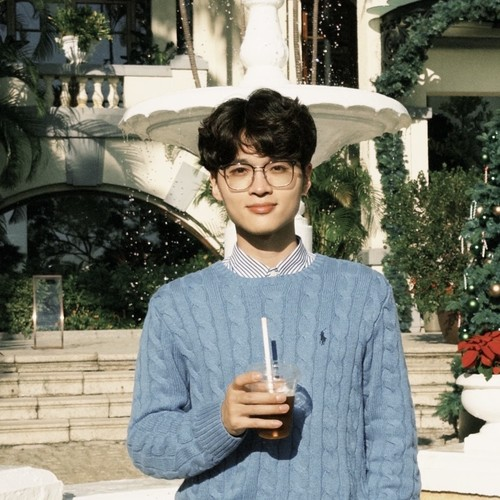
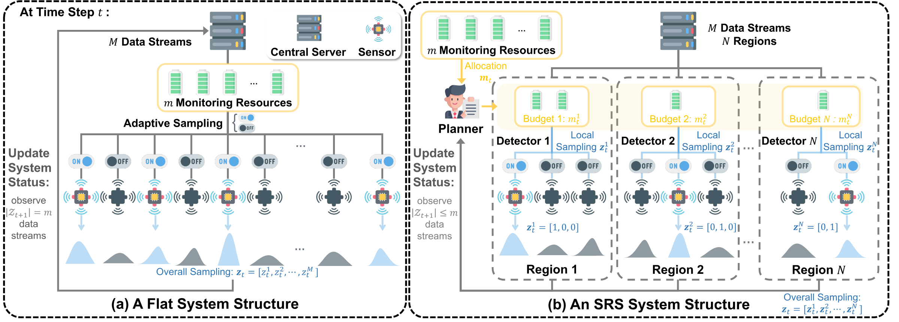
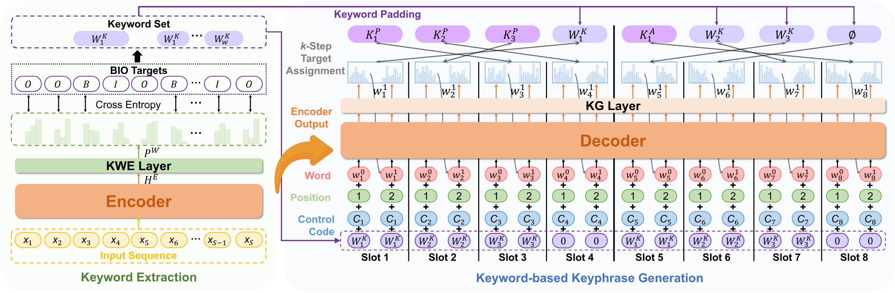
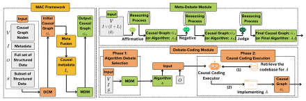
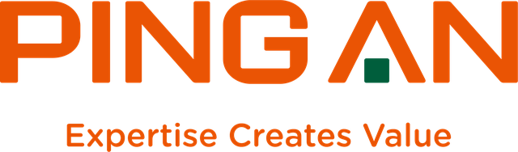

Learning Collision-Free Dispatch Policies for Route-Wise Decision-Dependent Anomaly Detection
Xin Xia, Chen Zhang, and Kaibo Liu
Advances in Neural Information Processing Systems (NeurIPS), 2026
I am a Ph.D. candidate in Industrial and Systems Engineering at the University of Wisconsin-Madison, advised by Prof. Kaibo Liu. I received my M.Sc. in Electrical and Computer Engineering from Georgia Tech and my B.Eng. in Electrical Engineering and Automation from Tianjin University.
My research develops reliable AI for decision-making in budgeted systems, where information acquisition is constrained and decisions incur costs.
This raises four questions: how to represent heterogeneous data, what to observe, how to act, and how to coordinate.
I pursue two connected lines of work. Representation and prediction: multimodal data fusion built on foundation models (LLMs, VLMs), with applications in interpretable knowledge discovery from unstructured data and clinical decision support. AI-driven decision-making: multi-agent reinforcement learning and data-driven optimization with statistical guarantees for sensing, acting, and coordination, with applications in embodied AI for autonomous fleets of robots and drones and resilient networked systems in manufacturing and supply chains.
My work has appeared in NeurIPS, Technometrics, IEEE Transactions on Engineering Management, and the International Journal of Production Economics. It received the INFORMS QSR Best Refereed Paper Award (2026) and was a finalist in the IISE QCRE Best Track Paper Competition (2025). I serve as a reviewer for NeurIPS, IEEE Transactions on Automation Science and Engineering, PNAS, and PNAS Nexus.






